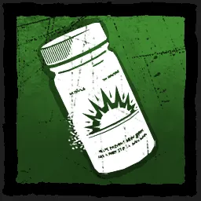
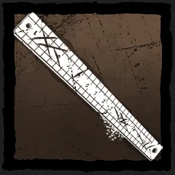
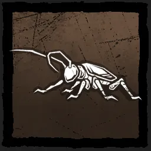
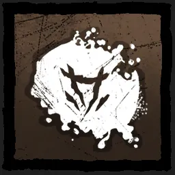
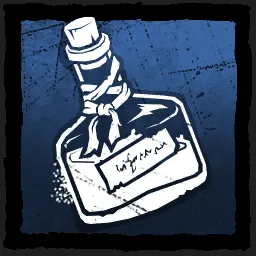
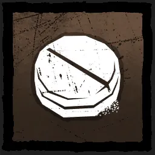
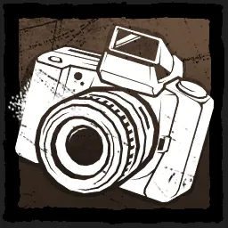
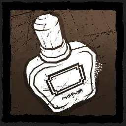

Dead by Daylight Farming Guide
Some info on how to max your points on different killers!
Killer
Addon(s)
Notes


Go to a pallet and use Feral Frenzy to hit the same survivor 2 times.
(Never sleeping pills will give you a caffeinated Bonus)
Keep doing this, At the gate use legion power as normal
(Never sleeping pills will give you a caffeinated Bonus)
Keep doing this, At the gate use legion power as normal

At the exit gates, Use your bound to slam survivors into each other.
Do this for all 4 survivors to get the most points possible.
Do this for all 4 survivors to get the most points possible.

Uncloak and hit 3 Survivors cloak and uncloak again to get your points faster.
At pallet if not yet full do this 1x
At the gates do this until full!
At pallet if not yet full do this 1x
At the gates do this until full!


Use your Lethal rush to injure a survivor.
Do hits as normal. Once at the pallet, bumb into an object and down them.
Use Multiple concussive rushes to gain Compound 21 value.
Do hits as normal. Once at the pallet, bumb into an object and down them.
Use Multiple concussive rushes to gain Compound 21 value.


Mark survivors ~70–80% at the trail start; avoid fully marking. Do hits as usual.
While doing pallets, crouch-stalk and hit for Silent Stab. After all pallets,
stalk a group holding the stalk button to gain Stalker points.
While doing pallets, crouch-stalk and hit for Silent Stab. After all pallets,
stalk a group holding the stalk button to gain Stalker points.